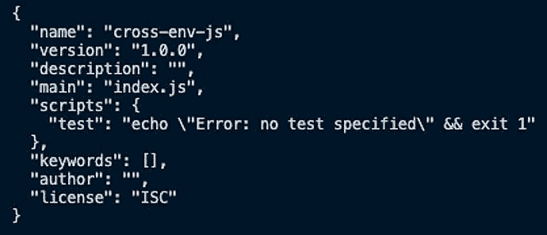

第 1 章:现代 JavaScript 概述
在这一章中，我们将讨论一些核心的 JavaScript 概念。如果你是 JavaScript 新手，需要介绍，请查看第 13 章 ，附录 : 基本 JavaScript 概念。
理解 JavaScript 的一些现代概念并不是使用 Danfo.js 的先决条件，但是如果您是 JavaScript 新手或者有 Python 背景，我们建议您通读这一章，因为在使用 Danfo.js 构建应用程序时，我们将使用这里介绍的大多数概念。另外，值得一提的是，这里介绍的许多概念通常会帮助您编写更好的 JavaScript。
本章向您介绍了一些现代 JavaScript 概念，到最后，您将学习并理解以下概念:
- 理解 let 和 var 的区别
- 解构
- 扩展语法
- 作用域和闭包概述
- 理解数组和对象方法
- 了解此属性
- 箭头功能
- 承诺和异步/等待
- 面向对象编程和 JavaScript 类
- 用 transpilers 建立现代 JavaScript 环境
- 用 Mocha 和 Chai 进行单元测试
技术要求
主要要求是安装 Node.js 和 NPM。你可以按照 https://nodejs.org/en/download/官方安装指南为你的操作系统安装节点。本章的代码可以在 GitHub repo 这里找到:https://GitHub . com/packt publishing/Building-Data-Driven-Applications-with-danfo . js/tree/main/chapter 01。
我们将从理解let和var之间的区别开始这一部分，以及为什么你应该更频繁地使用let。
理解 let 和 var 的区别
在 ECMA 6 之前，创建变量的常见方式是使用var。然而，使用var有时会引入一些 bug，这些 bug 大多出现在运行时，而其他的 bug 不会在运行时显露出来，但可能会影响代码的工作方式。
前段中提到的引入 bug 的var的一些属性如下:
var允许变量的重新声明。var未被封锁的范围；因此，它要么附属于全局作用域，要么附属于函数作用域。
下面详细讨论一下上面列举的两个属性。
var 允许变量的重新声明
var允许用户沿线重新声明变量，从而覆盖之前的同名变量。如果未被捕获，此功能可能不会显示错误，但肯定会影响代码的行为:
var population_count = 490; var new_count = 10; //along the line; you mistakenly re-declare the variable var population_count = "490" //do some arithmetic operation with the variable var total_count = population_count + new_count //output: "49010"
在前面的代码片段中，不会有任何错误，但是代码的主要目标被改变了，因为var没有提醒我们这样一个变量已经被声明了。
假设我们用let替换var，如以下代码所示:
let population_count = 490; // ...some other code goes here let population_count = "490" //output: Error: Identifier population count as already being declared
您可以从前面的错误输出中看到，let与var不同，它不允许您在同一个名称空间中声明一个变量两次。
接下来，让我们看看用var声明的变量的 scope 属性。
var 不是被阻止的范围
用var声明的变量具有以下属性:
- 它们在它们被定义的范围内是容易获得的。
- 它们可用于它们所声明的范围内。
在下面的代码中，我们将检查用var声明的estimate变量是如何在变量声明范围内的所有范围内被访问的:
var estimate = 6000;
function calculate_estimate() {
console.log(estimate);
}
calculate_estimate() // output 6000
if(true){
console.log(estimate);
}
现在，对于像if、while循环和for循环这样的阻塞范围，阻塞范围内的代码应该在该范围可用时运行。同样，变量意味着只在作用域可用时存在，一旦作用域再次不可用，变量就不应该可访问。
用var声明变量使得前面的语句不可行。在下面的代码中，我们使用var声明一个变量，并调查它在所有可能范围内的可用性:
if(true){
var estimate = 6000;
}
console.log(estimate)
这将输出估计值6000。该变量不应存在于if程序块之外。使用let有助于解决这个问题:
if(true){
let estimate = 6000;
}
console.log(estimate)
//output: ReferenceError: estimate is not defined
这表明使用let声明变量有助于减少代码中前所未有的错误。在下一节中，我们将讨论另一个叫做析构的重要概念。
解构
20、John、Doe、2019转化为指定变量:
let data2 = [20, "John", "Doe", "2019"]; let [ age1, firstName1, lastName1, year1] = data2
析构使得将数组元素赋给变量成为可能，这与访问数组元素的传统方法不同，如下面的代码所示:
//Old method of accessing an array let data = [20, "John", "Doe", "2019"]; let firstName = data[1]; let age = data[0]; let lastName = data[2]; let year = data[3];
析构也适用于对象，如下面的代码所示:
let data3 = {
age: 20,
firstName: "john",
lastName: "Doe",
year: 2019
}
let { age2, firstName2, lastName2, year2 } = data3
在对象析构中，注意我们使用{}而不是[]，就像用于数组一样。这是因为左侧的类型必须与右侧的类型相同。
重要说明
如果我们在析构一个对象时使用[]，我们会收到一个错误，显示{}用于数组析构，您可能不会得到任何错误，但是变量将是未定义的。
在下一节中，我们来看看扩展语法。
传播语法
扩展语法是另一种形式的可迭代元素的析构，比如字符串和数组。spread 语法可用于许多涉及数组和对象的情况。在这一节中，我们将快速查看一些扩展语法的用例。
将可迭代对象展开或解包到数组中
一个 iterable 可以扩展/解包到一个数组中。在以下示例中，我们将展示如何使用 spread 运算符来解包字符串变量:
let name = "stephen" let name_array = [...name];
代码将name字符串扩展为name_array，因此，name_array将具有以下值:[ 's', 't', 'e','p', 'h', 'e','n' ]。
在将字符串元素扩展到数组中时，我们可以添加其他值，如下面的代码所示:
let name = "stephen" let name_array = [...name, 1,2,3] console.log(name_array) // output ['s', 't', 'e','p', 'h', 'e','n',1,2,3]
请记住，任何 iterable 都可以扩展到数组中。这表明我们也可以将一个数组扩展到另一个数组中，如以下代码所示:
let series = [1,2,3,4,5,6,7,8] let new_array = [...series, 100, 200] console.log(new_array) // output [1, 2, 3, 4, 5,6, 7, 8, 100, 200]
从现有对象创建新对象
Let data = {
age: 20,
firstName: "john",
lastName: "Doe",
year: 2019
}
let new_data = {...data}
这将创建一个与前一个对象具有相同属性的新对象。在将以前的对象扩展到新对象时，可以在旁边添加新属性:
let data = {
age: 20,
firstName: "john",
lastName: "Doe",
year: 2019
}
let new_data = { ...data, degree: "Bsc", level: "expert" }
console.log(new_data)
//output
// {
// age: 20,
// Degree: "Bsc",
// FirstName: "John",
// lastName: "Doe",
// Level: "expert",
// Year: 2019
// }
函数参数
对于需要大量参数的函数，spread 语法可以帮助一次传递大量参数到函数中，从而减少一个接一个地填充函数参数的压力。
在下面的代码中，我们将看到如何将参数数组传递给函数:
function data_func(age, firstName, lastName, year) {
console.log(`Age: ${age}, FirstName: ${firstName}, LastName: ${lastName}, Year: ${year}`);
}
let data = [30, "John", "Neumann", '1948']
data_func(...data)
//output Age: 30, FirstName: John, LastName: Neumann, Year: 1984
Age: 30, FirstName: John, LastName: Neumann, Year: 1984
在前面的代码中，首先，我们创建了一个名为data_func的函数，并定义了一组要传入的参数。然后，我们创建了一个数组，其中包含要传递给data_func的参数列表。
通过使用 spread 语法，我们能够传递数据数组并将数组中的每个值指定为参数值–data_func(...data)。每当函数接受许多参数时，这就变得很方便。
在下一节中，我们将看看作用域和闭包，以及如何使用它们来更好地理解您的 JavaScript 代码。
作用域和闭包概述
在了解 let 和 var 的区别一节中，我们讨论了作用域，并讨论了var如何在全局作用域和函数作用域中可用。在这一节中，我们将更深入地讨论范围和闭包。
范围
let food = "sandwich"
function data() {
}
food变量和data函数都赋给了全局作用域；因此，它们被称为全局变量和 全局函数。这些全局变量和函数总是可以被 JavaScript 文件中的其他作用域和程序访问。
局部范围可进一步分组如下:
- 功能范围
- 封锁范围
函数范围仅在函数内可用。也就是说，在函数范围内创建的所有变量和函数在函数外部都是不可访问的，只有在函数范围可用时才存在，例如:
function func_scope(){
// function scope exist here
}
块范围只存在于特定的上下文中。例如，它可以存在于花括号{ }中，与if语句、for循环和while循环一起。下面的代码片段中提供了另外两个示例:
if(true){
// if block scope
}
在前面的if语句中，您可以看到块范围只存在于花括号中，并且在if语句中声明的所有变量都是局部变量。另一个例子是for循环，如下面的代码片段所示:
for(let i=0; i< 5; i++){
//for loop's block scope
}
块范围也存在于for...循环的花括号中。在这里，您可以访问i计数器，任何在内部声明的变量都不能在块外部访问。
接下来，让我们理解闭包的概念。
关闭
闭包利用了函数范围的概念。记住，我们同意在函数范围内声明的变量在函数范围外是不可访问的。闭包赋予我们利用这些私有属性(或变量)的能力。
假设我们想要创建一个程序，它总是将值2和1添加到代表人口估计的变量estimate中。下面的代码显示了实现这一点的一种方法:
let estimate = 6000;
function add_1() {
return estimate + 1
}
function add_2() {
return estimate + 2;
}
console.log(add_1()) // 60001
console.log(add_2()) // 60002
前面的代码没有问题，但是随着代码库变得非常大，我们可能会失去对estimate值的跟踪，也许是一个更新该值的函数，并且我们可能还希望通过将全局estimate变量变成局部变量来使全局范围变得干净。
因此，我们可以创建一个函数作用域来完成这项工作，并最终清理全局作用域。下面是以下代码片段中的一个示例:
function calc_estimate(value) {
let estimate = value;
function add_2() {
console.log('add two', estimate + 2);
}
function add_1() {
console.log('add one', estimate + 1)
}
add_2();
add_1();
}
calc_estimate(6000) //output: add two 60002 , add one 60001
前面的代码片段类似于我们定义的第一个代码片段，只有很小的不同，即函数接受estimate值，然后在calc_estimate函数中创建add_2和add_1函数。
使用前面的代码展示闭包的一个更好的方法是能够在我们需要的时候更新估计值，而不是在函数被调用的时候。让我们来看一个例子:
function calc_estimate(value) {
let estimate = value;
function add_2() {
estimate += 2
console.log('add 2 to estimate', estimate);
}
return add_2;
}
let add_2 = calc_estimate(50);
// we have the choice to add two to the value at any time in our code
add_2() // add 2 to estimate 52
add_2() // add 2 to estimate 54
add_2() // add 2 to estimate 56
在前面的代码片段中，内部函数add_2会将值2添加到变量estimate中，从而更改该值。calc_estimate被调用并赋给一个变量add_2。这样，每当我们调用add_2时，我们通过2更新估计值。
我们更新了calc_estimate中的add_2函数，以接受一个可用于更新estimate值的值:
function calc_estimate(value){
let estimate = value;
function add_2(value2){
estimate +=value2
console.log('add 2 to estimate', estimate);
}
return add_2;
}
let add_2 = calc_estimate(50);
// we have the choice to add two to the value at any time in our code
add_2(2) // add 2 to estimate 52
add_2(4) // add 2 to estimate 56
add_2(1) // add 2 to estimate 5
既然您已经学习了作用域和闭包，我们将在下一节转到数组、对象和字符串方法。
进一步阅读
要更详细地了解闭包，请查看由 Ved Antani 撰写的《掌握 JavaScript 》一书。
理解数组和对象方法
数组和对象是 JavaScript 中最重要的两种数据类型。因此，我们专门用一个章节来讨论他们的一些方法。我们将从数组方法开始。
阵列方法
不讨论数组方法就不能讨论如何构建一个数据驱动的产品。了解不同的数组方法给了我们访问数据和创建工具来操作/处理数据的特权。
可以用两种不同的形式创建数组:
let data = [] // or let data = new Array()
[ ]方法主要用于初始化数组，而new Array()方法主要用于创建一个 n 大小的空数组，如下面的代码片段所示:
let data = new Array(5) console.log(data.length) // 5 console.log(data) // [empty × 5]
创建的空数组稍后可以用值填充，如下面的代码所示:
data[0] = "20" data[1] = "John" data[2] = "Doe" data[3] = "1948" console.log(data) // ["20", "John","Doe","1948", empty] // try access index 4 console.log(data[4]) // undefined
创建这样的空数组不限于使用new Array()方法。它也可以用[ ]方法创建，如下面的代码片段所示:
let data = [] data.length = 5; // create an empty array of size 5 console.log(data) // [empty × 5]
您可以看到，我们在创建后显式地设置了长度，因此，new Array()方法更加方便。
现在让我们来看看一些常见的数组方法，它们将用于构建我们的一些数据驱动工具。
阵列.拼接
删除和更新数组值将永远是数据驱动产品中必不可少的事情之一。JavaScript 有一个delete关键字来删除数组中特定索引处的值。此方法并不实际删除该值，而是用一个空的或未定义的值替换它，如下面的代码所示:
let data = [1,2,3,4,5,6]; delete data[4]; console.log(data) // [1,2,3,4 empty, 6]
在data变量中，如果我们试图访问索引4处的值，我们将看到它返回undefined:
console.log(data[4]) // undefined
但是每当我们使用splice删除数组中的值时，数组的索引就会被重新排列，如下面的代码片段所示:
let data = [1,2,3,4,5,6] data.splice(4,1) // delete index 4 console.log(data) // [1,2,3,4,6]
Array.splice接受下面的论点，start,[deleteCount, value-1,......N-values]。在前面的代码片段中，因为我们只是删除，所以我们使用了start和deleteCount。
data.splice(4,1)命令删除从索引4开始的值，只有一个计数，因此它删除索引5处的值。
如果我们用2替换data.splice(4,1)中的值1，得到data.splice(4,2)，那么data数组中的两个值(5和6)将被删除，从索引4开始，如下面的代码块所示:
let data = [1,2,3,4,5,6] data.splice(4,0,10,20) // add values between 5 and 6 console.log(data) // [1,2,3,4,5,10,20,6]
data.splice(4,0,10, 20);指定从索引4开始，0指定不删除任何值，同时在5和6之间添加新值(10和20)。
数组.包含
这个方法用于检查一个数组是否包含一个特定的值。我们在下面的代码片段中展示了一个示例:
let data = [1,2,3,4,5,6] data.includes(6) // true
数组.切片
Array.slice用于通过指定范围获得一个数组元素；Array.slice(start-index, end-index)。让我们看看在下面的代码中使用此方法的示例:
let data = [1,2,3,4,5,6] data.slice(2,4) //output [3,4]
前面的代码提取元素，从索引2(包含元素3)到索引5。注意数组没有输出[3,4,5]，而是[ 3,4]。Array.splice始终排除结束索引值，因此它使用一个接近的结束范围。
Array.map
Array.map方法遍历数组的所有元素，对每次迭代应用一些操作，然后将结果作为数组返回。以下代码片段是一个示例:
let data = [1,2,3,4,5,6]
let data2 = data.map((value, index)=>{
return value + index;
});
console.log(data2) // [1,3,5,7,9,11]
通过使用map方法迭代每个数据元素来创建data2变量。在map方法中，我们将数组的每个元素(值)添加到它的索引中。
数组.过滤器
Array.filter方法用于过滤掉数组中的一些元素。让我们来看看实际情况:
let data = [1,2,3,4,5,6]
let data2 = data.filter((elem, index)=>{
return (index %2 == 0)
})
console.log(data2) // [1,3,5]
在前面的代码片段中，使用2的模数(%)过滤掉每个偶数索引处的数据数组元素。
有许多数组方法，但我们只介绍了这几个方法，因为它们在数据处理过程中总是很方便，我们不可能介绍所有的方法。
但是，如果在本书后面的章节中使用了任何新方法，我们一定会提供解释。在下一节中，我们将讨论对象方法。
物体
对象是 JavaScript 中最强大和最重要的数据类型，在这一节中，我们将介绍对象的一些重要属性和方法，以便于使用它们。
访问对象元素
访问对象中的键/值很重要，因此有一个特殊的for...in循环来完成:
for (key in object) {
// run some action with keys
}
for...in循环返回一个对象中的所有键，这可用于访问对象值，如下面的代码所示:
let user_profile = {
name: 'Mary',
sex: 'Female',
age: 25,
img_link: 'https://some-image-link.png',
}
for (key in user_profile) {
console.log(key, user_profile[key]);
}
//output:
// name Mary
// sex Female
// age 25
// img_link https://some-image-link.png
测试财产的存在
要检查属性是否存在，您可以使用"key" in对象语法，如以下代码片段所示:
let user_profile = {
name: 'Mary',
sex: 'Female',
age: 25,
img_link: 'https://some-image-link.png',
}
console.log("age" in user_profile)
//outputs: true
if ("rank" in user_profile) {
console.log("Your rank is", user_profile.rank)
} else {
console.log("rank is not a key")
}
//outputs: rank is not a key
删除属性
在对象属性前使用的delete关键字将从对象中删除指定的属性。请看下面的例子:
let user_profile = {
name: 'Mary',
sex: 'Female',
age: 25,
img_link: 'https://some-image-link.png',
}
delete user_profile.age
console.log(user_profile)
//output:
// {
// img_link: "https://some-image-link.png",
// name: "Mary",
// sex: "Female"
// }
您可以看到age属性已经从user_profile对象中成功移除。接下来，让我们看看如何复制和克隆对象。
复制和克隆对象
将一个旧对象分配给一个新对象只是创建一个对旧对象的引用。也就是说，对新对象的任何修改也会影响旧对象。例如，在下面的例子中，我们将user_profile对象赋给一个新变量new_user_profile，然后删除age属性:
let user_profile = {
name: 'Mary',
sex: 'Female',
age: 25,
img_link: 'https://some-image-link.png',
}
let new_user_profile = user_profile
delete new_user_profile.age
console.log("new_user_profile", new_user_profile)
console.log("user_profile", user_profile)
//output:
// "new_user_profile" Object {
// img_link: "https://some-image-link.png",
// name: "Mary",
// sex: "Female"
// }
// "user_profile" Object {
// img_link: "https://some-image-link.png",
// name: "Mary",
// sex: "Female"
// }
您会注意到，从user_profile对象中删除age属性也会从new_user_profile中删除它。这是因为副本只是对旧对象的引用。
为了将对象复制/克隆为新的和独立的对象，可以使用Object.assign方法，如下面的代码所示:
let new_user_profile = {}
Object.assign(new_user_profile, user_profile)
delete new_user_profile.age
console.log("new_user_profile", new_user_profile)
console.log("user_profile", user_profile)
//output
"new_user_profile" Object {
img_link: "https://some-image-lik.png",
name: "Mary",
sex: "Female"
}
"user_profile" Object {
age: 25,
img_link: "https://some-image-lik.png",
name: "Mary",
sex: "Female"
}
{kind=link}
Object.assign方法也可以用于同时从多个对象复制属性。我们在下面的代码片段中提供了一个示例:
let user_profile = {
name: 'Mary',
sex: 'Female',
age: 25,
img_link: 'https://some-image-lik.png',
}
let education = { graduated: true, degree: 'BSc' }
let permissions = { isAdmin: true }
Object.assign(user_profile, education, permissions);
console.log(user_profile)
//output:
// {
// name: 'Mary',
// sex: 'Female',
// img_link: 'https://some-image-link.png',
// graduated: true,
// degree: 'BSc',
// isAdmin: true
// }
您可以看到，我们能够将两个对象(education和permissions)的属性复制到我们的原始对象user_profile中。这样，我们可以将任意数量的对象复制到另一个中，只需在调用Object.assign方法时列出所有对象。
小费
您也可以使用展开操作器执行深度复制。这实际上更快更容易编写，如以下示例所示:
let user_profile = {
name: 'Mary',
sex: 'Female'
}
let education = { graduated: true, degree: 'BSc' }
let permissions = { isAdmin: true }
const allObjects = {...user_profile, ...education, ...permissions}
allObjects. This syntax is easier and quicker than the object.assign method and is largely used today.
在下一节，我们将讨论另一个重要的概念，它将与 JavaScript 对象联系起来，称为 this 属性。
理解这个属性
这个关键字是一个对象属性。当在函数中使用时，它采用调用时函数绑定到的对象的形式。
在每个 JavaScript 环境中，我们都有一个全局对象。在 Node.js 中，全局对象被命名为 global ，在浏览器中，全局对象被命名为 window 。
对于全局对象，我们的意思是所有的变量声明和函数都表示为这个全局对象的一个属性和方法。例如，在浏览器脚本文件中，我们可以访问全局对象，如下面的代码片段所示:
name = "Dale"
function print() {
console.log("global")
}
// using the browser as our environment
console.log(window.name) // Dale
window.print() // global
在前面的代码块中，name变量和print函数是在全局范围内声明的，因此它们可以作为窗口全局对象的属性(window.name和方法(window.print())来访问。
前一句中的陈述可以总结为全局名称和函数默认绑定(或分配)到全局对象窗口。
这也意味着我们总是可以将这个变量绑定到任何具有相同name变量和相同函数的对象，称为print。
要得到这个概念，首先，我们把window.print()重新写成print.call(window)。这种新方法在 JavaScript 中被称为去糖化；这就像看到一个方法的实现的真实形式。
.call方法只是接受我们想要绑定函数调用的对象。
让我们看看print.call()和这个属性是如何工作的。我们将重写print函数来访问name变量，如下面的代码片段所示:
name = "Dale"
object_name = "window"
function print(){
console.log(`${this.name} is accessed from ${this.object_name}`)
}
console.log(print.call(window)) // Dale is accessed from window
现在，让我们创建一个自定义对象，并赋予它与window对象相同的属性，如下面的代码片段所示:
let custom_object = {
name: Dale,
Object_name: "custom_object"
}
print.call(custom_object) // Dale is accessed from custom_object
这个概念可以应用于所有对象方法，如下面的代码所示:
data = {
name: 'Dale',
obj_name: 'data',
print: function () {
console.log(`${this.name} is accessed from ${this.obj_name}`);
}
}
data.print() // Dale is accessed from data
// don't forget we can also call print like this
data.print.call(data) // Dale is accessed from data
这样，我们还可以将data中的print()方法绑定到另一个对象，如下面的代码片段所示:
let data2 = {
name: "Dale D"
Object_name: "data2"
}
data.print.call(data2) // Dale D is accessed from data2
该方法显示了该属性如何依赖于函数调用运行时。这个概念也影响了 JavaScript 中一些事件操作的工作方式。
进一步阅读
为了更深入地理解这个概念， Emberjs 的创始人之一和 TC39 的成员 Yehuda Katz 在他的文章理解 JavaScript 函数调用和“this”中对 this 做了更多的阐述。
箭头功能
箭头函数只是未命名或匿名的函数。箭头功能的一般语法如下式所示:
( args ) => { // function body }
箭头函数提供了一种创建简洁的可调用函数的方法。这里，我们的意思是箭头函数是不可构造的，也就是说，它们不能用 new 关键字实例化。
- 箭头功能可以分配给一个变量:
const unnamed = (x) => { console.log(x) } unnamed(10) // 10 - 箭头函数可以作为生命 ( 立即调用函数表达式)。IIFEs 是函数，一旦被 JavaScript 编译器遇到就会被立即调用:
((x) => { console.log(x) })("unnamed function as IIFE") // output: unnamed function as IIFE - 箭头函数可以作为回调:
function processed(arg, callback) { let x = arg * 2; return callback(x); } processed(2, (x) => { console.log(x + 2) }); // output: 6
虽然箭头函数在某些情况下很有用，但是使用它们也有不好的一面。例如，箭头函数没有自己的this作用域，因此它的作用域总是绑定到通用作用域，从而改变了我们对函数调用的整体想法。
在理解这个属性一节中，我们讨论了函数如何绑定到它们的调用范围，以及如何使用这个能力来支持闭包，但是使用 arrow 函数默认情况下会拒绝我们这个特性:
const Obj = {
name: "just an object",
func: function(){
console.log(this.name);
}
}
Obj.func() // just an object
即使在对象中，如代码片段所示，我们使用了匿名函数(但不是箭头函数)，我们也可以访问对象的Obj属性:
const Obj = {
name: "just an object",
func: () => {
console.log(this.name);
}
}
Obj.func() // undefined
所使用的箭头功能使Obj.func输出undefined。如果我们在全局范围内有一个名为name的变量，让我们看看它是如何工作的:
let name = "in the global scope"
const Obj = {
name: "just an object",
func: () => {
console.log(this.name);
}
}
Obj.func() // in the global
正如我们所见，Obj.func在全局范围内调用变量。因此，我们必须知道何时何地使用箭头函数。
在下一部分，我们将讨论承诺和异步/等待概念。这将使我们能够轻松地管理长时间运行的任务，并避免回调地狱(回调有回调)。
承诺和异步/等待
让我们深入了解一下异步函数的世界，这些函数我们现在调用，但以后再完成。在这个部分，我们将看到为什么我们需要承诺和异步/等待。
让我们从一个简单的问题开始，如下面的代码片段所示。在调用函数1秒钟后，我们有一个用函数更新数组的任务:
let syncarray = ["1", "2", "3", "4", "5"]
function addB() {
setTimeout(() => {
syncarray.forEach((value, index)=>{
syncarray[index] = value + "+B"
})
console.log("done running")
}, 1000)
}
addB()
console.log(syncarray);
// output
// ["1", "2", "3", "4", "5"]
// "done running"
console.log(syncarray)在addB()功能之前执行，因此我们在更新之前看到了syncarray输出。这是一种异步行为。解决这个问题的方法之一是使用回调:
let syncarray = ["1", "2", "3", "4", "5"]
function addB(callback) {
setTimeout(() => {
syncarray.forEach((value, index)=>{
syncarray[index] = value + "+B"
})
callback() //call the callback function here
}, 1000)
}
addB(()=>{
// here we can do anything with the updated syncarray
console.log(syncarray);
})
// output
// [ '1+B', '2+B', '2+B', '4+B', '5+B' ]
使用前面的回调方法意味着我们总是传递回调，以便在更新的syncarray函数上执行其他操作。让我们稍微更新一下代码，这次我们也将字符串"A"添加到syncarray中，然后打印出更新后的数组:
let syncarray = ["1", "2", "3", "4", "5"]
function addB(callback) {
setTimeout(() => {
syncarray.forEach((value, index) => {
syncarray[index] = value + "+B"
})
callback() //call the callback function here
}, 1000)
}
addB(() => {
setTimeout(() => {
syncarray.forEach((value, index) => {
syncarray[index] = value + "+A";
})
console.log(syncarray);
}, 1000)
})
// output
// [ '1+B+A', '2+B+A', '3+B+A', '4+B+A', '5+B+A' ]
前面的代码块显示了一种快速传递callback的方法。基于我们讨论的箭头函数，可以通过创建一个命名函数来更好地组织它。
用承诺清洗回调
使用回调很快变得笨拙，并可能很快陷入回调地狱。将我们从这种状态中解放出来的一个方法是利用承诺。承诺让我们的回访更有条理。它提供了一个可链接的机制来统一并编排依赖于先前函数的代码，正如您将在下面的代码块中看到的:
let syncarray = ["1", "2", "3", "4", "5"]
function addA(callback) {
return new Promise((resolve, reject) => {
setTimeout(() => {
syncarray.forEach((value, index) => {
syncarray[index] = value + "+A";
})
resolve()
}, 1000);
})
}
addA().then(() => console.log(syncarray));
//output
//[ '1+A', '2+A', '2+A', '4+A', '5+A' ]
在前面的代码片段中，setTimeout被包装在Promise函数中。一个Promise总是使用下面的表达式进行实例化:
New Promise((resolve, rejection) => {
})
一个Promise或者被解决或者被拒绝。当它被解决时，那么我们就可以自由地做其他事情，当它被拒绝时，我们需要处理错误。
例如，让我们确保下面的Promise被拒绝:
let syncarray = ["1", "2", "3", "4", "5"]
function addA(callback) {
return new Promise((resolve, reject) => {
setTimeout(() => {
syncarray.forEach((value, index) => {
syncarray[index] = value + "+A";
})
let error = true;
if (error) {
reject("just testing promise rejection")
}
}, 1000);
})
}
addA().catch(e => console.log(e)) // just testing promise rejection
每当我们有多个承诺时，我们可以使用.then()方法来处理每个承诺:
addA.then(doB)
.then(doC)
.then(doD)
.then(doF)
.catch(e= > console.log(e));
使用多种方法来处理众多的承诺会很快变得难以操作。为了防止这种情况，我们可以使用Promise.all()、Promise.any()、Promise.race()等方法。
Promise.all()方法接受一组要执行的承诺，而只有在所有承诺都实现时才会解析。在下面的代码片段中，我们向前面的示例添加了另一个异步函数，并使用Promise.all()来处理它们:
let syncarray = ["1", "2", "2", "4", "5"]
function addA() {
return new Promise((resolve, reject) => {
setTimeout(() => {
syncarray.forEach((value, index) => {
syncarray[index] = value + "+A";
})
resolve()
}, 1000);
})
}
function addB() {
return new Promise((resolve, reject) => {
setTimeout(() => {
syncarray.forEach((value, index) => {
syncarray[index] = value + "+B";
})
resolve()
}, 2000);
})
}
Promise.all([addA(), addB()])
.then(() => console.log(syncarray)); // [ '1+A+B', '2+A+B', '2+A+B', '4+A+B', '5+A+B' ]
从上一节的输出中，可以看到每个异步函数都按照添加的顺序执行，最终结果是两个函数对syncarray变量的影响。
另一方面，promise.race方法将在数组中的任何承诺被解析或拒绝后立即返回。你可以认为这是一场比赛，每个承诺都试图先解决或拒绝，一旦发生这种情况，比赛就结束了。要查看深入的解释以及代码示例，可以访问这里的 MDN 文档:https://developer . Mozilla . org/en-US/docs/Web/JavaScript/Reference/Global _ Objects/Promise/any。
最后，promise.any方法将返回第一个实现的承诺，而不管任何其他被拒绝的promise函数。如果所有承诺都被拒绝，那么Promise.any通过为所有承诺提供错误来拒绝承诺。要查看深入的解释以及代码示例，可以访问这里的 MDN 文档:https://developer . Mozilla . org/en-US/docs/Web/JavaScript/Reference/Global _ Objects/Promise/race。
虽然使用承诺来处理回调解决了很多问题，但是有一种更好的方法来实现或使用它们。这些被称为异步/等待功能。我们将在下一节介绍这些函数，并向您展示如何使用它们。
异步/等待
如前所述，async/await 提供了一种更优雅的处理承诺的方式。它让我们能够控制每个 promise 函数在函数内部被调用的方式和时间，而不是使用.then()和Promise.all()。
以下代码片段显示了如何在代码中使用 async/await:
Async function anyName() {
await anyPromiseFunction()
await anyPromiseFunction()
}
前面的async函数可以包含尽可能多的 promise 函数，每个函数在被执行之前等待另一个函数执行。另外，请注意，a sync功能被解析为Promise。也就是说，您只能使用.then()或通过在另一个async / await函数中调用它来获得前面的anyName函数的返回变量(或解析该函数):
Async function someFunction() {
await anyPromiseFunction()
await anotherPromiseFunction()
return "done"
}
// To get the returned value, we can use .then()
anyName().then(value => console.log(value)) // "done"
// we can also call the function inside another Async/await function
Async function resolveAnyName() {
const result = await anyName()
console.log(result)
}
resolveAnyName() // "done"
有了这些知识，我们就可以重写前面章节中的承诺执行，而不是使用Promise.all([addA(), addB()]):
let syncarray = ["1", "2", "2", "4", "5"]
function addA(callback) {
return new Promise((resolve, reject) => {
setTimeout(() => {
syncarray.forEach((value, index) => {
syncarray[index] = value + "+A";
})
resolve()
}, 1000);
})
}
function addB(callback) {
return new Promise((resolve, reject) => {
setTimeout(() => {
syncarray.forEach((value, index) => {
syncarray[index] = value + "+B";
})
resolve()
}, 2000);
})
}
Async function runPromises(){
await addA()
await addB()
console.log(syncarray);
}
runPromises()
//output: [ '1+A+B', '2+A+B', '2+A+B', '4+A+B', '5+A+B' ]
您可以从前面的输出中看到，我们的输出与使用Promise.all语法时的输出相同，但是采用了一种最小化且更简洁的方法。
注意
与promise.all相比，使用多个等待的一个缺点是效率。虽然不太重要，但promise.all是处理多个独立承诺的首选和推荐方式。
这个关于堆栈溢出的线程(https://Stack Overflow . com/questions/45285129/any-difference-await-promise-all-and-multiple-await)清楚地解释了为什么这是处理多个承诺的推荐方式。
在下一节中，我们将讨论 JavaScript 中的面向对象编程 ( OOP )，以及如何使用 ES6 类。
面向对象编程和 JavaScript 类
OOP 是大多数高级语言支持的一种常见编程范式。在 OOP 中，你通常使用对象的概念来编写应用程序，对象可以是数据和代码的组合。
数据表示关于对象的信息，而代码表示可以在对象上执行的属性、特性和行为。
OOP 打开了一个全新的可能性世界，因为许多问题可以模拟或设计为不同对象之间的交互，从而使设计复杂的程序变得更容易，以及维护和扩展它们。
JavaScript 和其他高级语言一样，提供了对 OOP 概念的支持，虽然不完全(https://developer . Mozilla . org/en-US/docs/Web/JavaScript/Reference/Classes)，但本质上，OOP 的大部分重要概念，如对象、类和继承都是支持的，这些基本上足以解决你希望用 OOP 建模的许多问题。在下一节中，我们将简要地看一下 JavaScript 中的类以及它们与 OOP 的关系。
类别
OOP 中的类就像一个对象的蓝图。也就是说，他们定义了一个抽象对象的模板，这样就可以按照这个蓝图制作多个副本。这里的副本正式称为实例。因此，本质上，如果我们定义了一个类，那么我们可以很容易地创建该类的多个实例。
在 ECMA 2015 中，使用 ES16 class关键字的User对象:
class User {
constructor(firstName, lastName, email) {
this.firstName = firstName;
this.lastName = lastName;
this.email = email;
}
getFirstName() {
return this.firstName;
}
getLastName() {
return this.lastName;
}
getFullName() {
return `${this.firstName} ${this.lastName}`;
}
getEmail() {
return this.email;
}
setEmail(email) {
this.email = email;
}
}
let Person1 = new User("John", "Benjamin", "john@some-email.com")
console.log(Person1.getFullName());
console.log(Person1.getEmail());
// outputs
// "John Benjamin"
// "john@someemail.com"
通过使用class关键字，你可以以一种更简洁的方式将数据(姓名和电子邮件)和功能(函数/方法)包装在一起，这有助于维护和理解。
在我们继续之前，让我们更详细地分解类模板，以便更好地理解。
第一行以关键字class开始，后面通常跟一个类名。按照惯例，一个类名是用骆驼字体写的，例如，UserModel或者DatabaseModel。
可以在class定义中添加一个可选的构造函数。一个constructor类是一个初始化函数，每次从一个类创建一个新实例时运行。在这里，您通常会添加用特定属性初始化每个实例的代码。例如，在下面的代码片段中，我们从User类创建了两个实例，并用特定的属性对它们进行初始化:
let Person2 = new User("John", "Benjamin", "john@some-email.com")
let Person3 = new User("Hannah", "Joe", "hannah@some-email.com")
console.log(Person2.getFullName());
console.log(Person3.getFullName());
//outputs
// "John Benjamin"
// "Hannah Montanna"
一个类的下一个重要部分是函数的添加。函数充当class方法，通常向类添加特定的行为。函数也可用于从该类创建的每个实例。在我们的User类中，添加了getFirstName、getLastName、getEmail和setEmail等方法，根据它们的实现来执行不同的功能。为了调用类实例上的函数，通常使用点符号，就像访问对象的属性时使用的。例如，在下面的代码中，我们返回了Person1实例的全名:
Person1.getFullName()
随着类的出现，我们现在转向 OOP 中的下一个概念，叫做继承。
继承
OOP 中的继承是一个类使用另一个类的属性/方法的能力。使用另一个类(超类/父类)扩展一个类(子类/子类)的特征是一种简单的方法。这样，子类继承了父类的所有特征，并且可以扩展或改变这些属性。让我们用一个例子来更好地理解这个概念。
在我们的应用程序中，假设我们已经有了上一节定义的User类，但是我们想要创建一组名为Teachers的新用户。教师也是一类用户，他们也会要求基本的属性，比如User类已经有的名字和邮箱。因此，我们可以简单地扩展它，而不是用这些现有的属性和方法创建一个新类，如下面的代码片段所示:
class Teacher extends User {
}
注意，我们使用了extends关键字。这个关键字只是让子类(Teacher)可以使用父类(User)中的所有属性。只需进行基本设置，Teacher类就可以自动访问User类的所有属性和方法。例如，我们可以实例化并创建一个新的Teacher，就像我们创建一个User值一样:
let teacher1 = new Teacher("John", "Benjamin", "john@someemail.com")
console.log(teacher1.getFullName());
//outputs
// "John Benjamin"
在扩展了一个类之后，我们基本上想要添加新的特性。我们只需在子类模板中添加新的函数或属性就可以做到这一点，如下面的代码所示:
class Teacher extends User {
getUserType(){
return "Teacher"
}
}
在前面的代码片段中，我们添加了一个新方法getUserType，它返回一个user类型的字符串。这样，我们可以添加更多原本不在parent类中的特性。
值得一提的是你可以通过在child类中创建一个同名的新函数来替换child类中的父函数。这个进程在Teacher类中被称为getFullName函数，我们可以做下面的:
class User {
constructor(firstName, lastName, email) {
this.firstName = firstName;
this.lastName = lastName;
this.email = email;
}
getFirstName() {
return this.firstName;
}
getLastName() {
return this.lastName;
}
getFullName() {
return `${this.firstName} ${this.lastName}`;
}
getEmail() {
return this.email;
}
setEmail(email) {
this.email = email;
}
}
class Teacher extends User {
getFullName(){
return `Teacher: ${this.firstName} ${this.lastName}`;
}
getUserType(){
return "Teacher"
}
}
let teacher1 = new Teacher("John", "Benjamin", "john@someemail.com")
console.log(teacher1.getFullName());
//output
// "Teacher: John Benjamin"
这里可能会出现一个问题:如果我们想用除了firstname、lastname和email之外的其他实例来初始化Teacher类呢？这是可以实现的，我们可以通过使用一个新的关键字super轻松地扩展构造函数。我们在下面的代码中演示了如何做到这一点:
// class User{
// previous User class goes here
// ...
// }
class Teacher extends User {
constructor(firstName, lastName, email, userType, subject) {
super(firstName, lastName, email) //calls parent class constructor
this.userType = userType
this.subject = subject
}
getFullName() {
return `Teacher: ${this.firstName} ${this.lastName}`;
}
getUserType() {
return "Teacher"
}
}
let teacher1 = new Teacher("Johnny", "Benjamin", "john@someemail.com", "Teacher", "Mathematics")
console.log(teacher1.getFullName());
console.log(teacher1.userType);
console.log(teacher1.subject);
//outputs
// "Teacher: Johnny Benjamin"
// "Teacher"
// "Mathematics"
在前面的代码中，我们执行了两件新的事情。首先，我们向Teacher类添加两个新的实例属性(userType和subject)，然后我们调用super函数。super函数简单地调用父类(User)，并执行实例化，紧接着，我们初始化Teacher类的新属性。
这样，我们能够在初始化类属性之前首先初始化父属性。
类在 OOP 中非常有用，JavaScript 中提供的class关键字使得使用 OOP 变得容易。值得一提的是，在幕后，JavaScript 将 classes 模板转换为一个对象，因为它没有对类的一流支持。这是因为默认情况下，JavaScript 是一种基于原型的、面向对象的语言。因此，所提供的类接口被称为语法糖而不是底层的基于原型的模型，JavaScript 在幕后调用它。你可以通过以下链接了解更多信息:http://es6-features.org/#ClassDefinition。
既然我们已经对 JavaScript 中的 OOP 有了一个基本的了解，我们就可以创建易于维护的复杂应用程序了。在下一节中，我们将讨论 JavaScript 开发的另一个重要方面，即建立一个支持现代 JavaScript 的开发环境。
用 transpilers 建立现代 JavaScript 环境
JavaScript 的独特之处之一，也是它非常流行的原因，是它的跨平台支持。JavaScript 几乎可以在任何地方运行，从浏览器和桌面到服务器端。虽然这是一个独特的特性，但是让 JavaScript 在这些环境中以最佳方式运行需要使用第三方工具/库进行一些设置和配置。您需要设置工具的另一个原因是，您可以编写不同风格的 JavaScript，并且因为旧浏览器可能不支持这些现代/新风格。这意味着你用新语法写的代码，通常是 15 年以后的，需要转换成 16 年以前的格式，才能在大多数浏览器中正常运行。
在本节中，您将学习如何设置和配置 JavaScript 项目以支持跨平台和现代 JavaScript 代码。您将使用两个流行的工具—Babel和 webpack 来实现这一点。
巴别塔
Babel 是将 ES15 代码编写的 JavaScript 代码转换成现代或老版浏览器的 JavaScript 向后兼容版本的工具。巴别塔可以帮助你做到以下几点:
在下面的代码中，我们展示了一个巴别塔转换代码片段的示例:
// Babel Input: ES2015 arrow function
["Lion", "Tiger", "Shark"].map((animal) => console.log(animal));
// Babel Output: ES5 equivalent
["Lion", "Tiger", "Shark"].map(function(animal) {
console.log(animal)
});
您会注意到，在前面的代码片段中，modern arrow 函数被自动转换为所有浏览器都支持的 function 关键字。这就是 Babel 在幕后对您的源代码所做的。
接下来，我们来了解一下 webpack 的用武之地。
网络包
webpack 也是一个 transpiler，可以执行与 Babel 相同的功能，甚至更多。webpack 可以打包和捆绑任何东西的，包括图像、 HTML 、 CSS 和 JavaScript ，到一个可以在浏览器中轻松使用的优化脚本中。
在这一节中，我们将利用 Babel 和 webpack 向您展示如何建立一个跨平台的 JavaScript 项目。让我们开始吧。
使用 Babel 和 webpack 的示例项目
在本节中，我们将使用npm创建一个简单的 JavaScript 项目。因此，您应该在本地安装 Node.js，以便进行后续操作。为此，请执行以下步骤:
- 在您的首选目录中打开一个终端，并使用以下命令创建一个文件夹:
cross-env-js, in your directory, and then change the directory as well. - 创建一个
package.json文件。虽然您可以手动完成，但是使用npm创建一个更容易。在您的终端中运行以下命令:package.jsonfile and accept all default options. Ideally, this should output the following:Figure 1.1 – Output from running the npm init –y command
- 接下来，安装所有有助于我们执行捆绑和传输的相关包:
package.jsonfile should look like this:{ "name": "cross-env-js", "version": "1.0.0", "description": "", "main": "index.js", "scripts": { "test": "echo \"Error: no test specified\" && exit 1" }, "keywords": [], "author": "", "license": "ISC", "devDependencies": { "@babel/cli": "^7.12.8", "@babel/core": "^7.12.9", "@babel/preset-env": "^7.12.7", "babel-loader": "^8.2.2", "webpack": "^5.9.0", "webpack-cli": "^4.2.0" }, "dependencies": { "@babel/polyfill": "^7.12.1" } } - Add some code, which we'll transpile and test. For this section, you can either create files and folders from the terminal or use a code editor. I'll use the Visual Studio Code editor here.
在代码编辑器中，打开
cross-env-js项目文件夹，然后创建文件和文件夹，如下所示:├── dist │ └── index.html ├── src │ ├── index.js │ ├── utils.js
也就是说，您将创建两个名为
dist和src的文件夹。dist将包含一个 HTML 文件(index.html，它将用于测试我们的捆绑应用程序，而src将包含我们想要转换的现代 JavaScript 代码。├── dist │ └── index.html ├── node_modules ├── package-lock.json ├── package.json └── src ├── index.js └── utils.js注意
如果您正在使用版本控制，比如 Git，您通常会添加一个
.gitignore文件来指定可以忽略node_modules。 - Create a
distfolder, and in that folder, create anindex.htmlfile with the following code:<!DOCTYPE html> <html lang="en"> <head> <meta charset="UTF-8"> <meta name="viewport" content="width=device-width, initial-scale=1.0"> <script src="bundle.js"></script> <title>Cross Environment Support</title> </head> <body> </body> </html>您应该对 HTML 文件很熟悉，但是请注意，我们添加了一个指向
bundle.js文件的script标签。该文件尚不存在，将由 webpack 使用 Babel 生成。 - Write some modern JavaScript in the
srcfolder. Starting withutils.js, we'll create and export some functions, and then import them to be used inindex.js.从
utils.js开始，添加以下代码:const subjects = { John: "English Language", Mabel: "Mathematics", Mary: "History", Joe: "Geography" } export const names = ["John", "Mabel", "Mary", "Joe"] export const getSubject = (name) =>{ return subjects[name] }utils.js脚本使用了一些现代的 JS 语法，比如export和 arrow 函数，而这些只有在 transpilation 之后才能与老版本的浏览器兼容。接下来，在
index.js脚本中，您将导入并使用这些函数。将以下代码添加到您的index.js脚本中:import { names, getSubject } from "./utils"; names.forEach((name) =>{ console.log(`Teacher Name: ${name}, Teacher Subject: ${getSubject(name)}`) })你会注意到我们也在
index.js文件中使用了箭头函数和析构导入。这里，我们从utils.js脚本导入导出的数组(名称)和getSubject函数。我们还使用箭头函数和模板文字(` `)的组合来检索和记录每个Teacher的细节。 - Now that our modern JS files are ready, we'll create a configuration file that tells webpack where to find our source code to bundle as well as which transpiler to use, in our case, Babel.
在您的根目录中，创建一个
webpack.config.js文件并添加以下代码:const path = require('path'); module.exports = { entry: './src/index.js', output: { filename: 'bundle.js', path: path.resolve(__dirname, 'dist'), publicPath: '/dist' }, module: { rules: [ { test: /\.js$/, exclude: /(node_modules)/, use: { loader: 'babel-loader', } } ] } };让我们了解一下这个文件中发生了什么:
a)配置文件的第一部分需要
path模块，这将有助于解析所有与路径相关的函数。b)接下来，您会注意到
entry字段。这个字段只是告诉 webpack 在哪里可以找到开始/主脚本。webpack 将使用这个文件作为起点，然后递归地遍历每个导入依赖项，以链接与条目文件相关的所有文件。c)下一个字段是
output，它告诉 webpack 在哪里保存捆绑文件。在我们的例子中，我们将打包的文件保存到名为bundle.js的dist文件夹中(记得我们在 HTML 文件中引用了bundle.js)。d)最后，在
module字段中，我们指定我们希望使用 Babel 传输每个脚本，并且我们还排除了传输node_modules。有了这个 webpack 配置文件，您就可以传输和打包您的源代码了。 - 在您的
package.json文件中，您将添加一个调用webpack的脚本命令，如下面的代码块所示:{ ... "scripts": { "build": "webpack --mode=production", "test": "echo \"Error: no test specified\" && exit 1" }, ... } - 在您的终端中，运行以下命令:
package.jsonfile, and this, in turn, will ask webpack to bundle your code referencing the config file you created earlier.Following successful compilation, you should have the following output in your terminal:

图 1.2–web pack 捆绑成功输出
成功完成前面的步骤后，您可以导航到dist文件夹，在那里您会找到一个额外的文件——bundle.js。该文件已经被index.html文件引用，因此，当我们在浏览器中加载index.html文件时，该文件将被执行。
为了测试这一点，在默认浏览器中打开index.html文件。这可以通过导航到目录并双击index.html文件来完成。
一旦您在浏览器中打开了index.html文件，您应该打开开发人员控制台，在那里您可以找到您的代码输出，如下面的屏幕截图所示:

图 1.3–浏览器控制台中的 index.js 输出
这表明您已经成功地将现代 JS 代码转换并打包成一种可以在任何浏览器中执行的格式，无论是旧的还是新的。
进一步阅读
捆绑文件会很快变得困难和混乱，尤其是当项目变得更大的时候。如果您需要进一步了解如何捆绑文件，可以参考以下资源:
*使用 webpack 开始使用(https://webpack.js.org/guides/getting-started/)
*通天塔用法指南(【https://babeljs.io/docs/en/usage】T21)
*如何使用 Node 和 Express 启用 ES6(和 beyond)语法(https://www . freecodecamp . org/news/How-to-enable-ES6-and-beyond-syntax-with-Node-and-Express-68d 3 e 11 Fe 1 ab/)
在下一节中，您将学习如何在您的 JavaScript 应用程序中设置测试和执行单元测试。
使用 Mocha 和 Chai 进行单元测试
为你的应用程序编写测试代码是非常重要的，但是在大多数书中很少提到。这就是为什么我们决定添加关于使用 Mocha 进行单元测试的这一部分。虽然您不一定要为本书中将要构建的每个示例应用程序编写详细的测试，但我们将向您展示您需要掌握的基本知识，您甚至可以在自己的项目中使用它们。
测试，或者自动化测试，在开发过程中被用来检查我们的代码实际上是否如预期的那样运行。也就是说，你，一个函数的作者，通常会预先知道函数是如何运行的，因此可以用预期的结果来测试结果。
it和describe，可以用来自动编写和运行测试。Mocha 的美妙之处在于它可以在节点和浏览器环境中运行。Mocha 还支持与柴(https://www.chaijs.com/)、expect . js(https://github.com/LearnBoost/expect.js)、should . js()，甚至 Node.js '内置assert(https://nodejs.org/api/assert.html)模块等各种断言库集成。在本书中，我们将使用 Chai 断言库，因为它是 Mocha 最常用的断言库之一。
设置测试环境
在我们开始编写测试之前，我们将建立一个基本的 Node.js 项目。为此，请执行以下步骤:
- 在您当前的工作目录中，创建一个名为
unit-testing:$ mkdir unit-testing $ cd unit-testing
的新文件夹 - 使用
npm初始化一个新的 Node.js 项目，如下面的命令所示:$ npm init -y
- 安装 Mocha 和 Chai 作为开发依赖:
$ npm install mocha chai --save-dev
- Following successful installation, open your
package.jsonfile and change thetestcommand inscriptsto the following:{ ... "scripts": { "test": "mocha" }, ... }这意味着我们可以通过在终端中运行
npm run test命令来运行测试。 - 创建两个文件夹，
src和test。src文件夹将包含我们的源代码/脚本，而test文件夹将包含我们代码的相应测试。创建文件夹后，你的项目树应该如下所示:├── package-lock.json ├── package.json ├── src └── test
- In the
srcfolder, create a script calledutils.js, and add the following functions:exports.addTwoNumbers = function (num1, num2) { if (typeof num1 == "string" || typeof num2 == "string"){ throw new Error("Cannot add string type to number") } return num1 + num2; }; exports.mean = function (numArray) { let n = numArray.length; let sum = 0; numArray.forEach((num) => { sum += num; }); return sum / n; };前面的函数执行一些基本的计算。第一个函数将两个数字相加并返回结果，而第二个函数计算数组中数字的平均值。
注意
我们在这里写的是 ES16 之前的 JavaScript。这是因为我们不打算为这个示例项目设置任何 transpiler。在使用现代 JavaScript 的项目中，通常会在测试之前转换源代码。
- In your
testfolder, add a new file, also calledutils.js. This naming convention is recommended, as different files should bear the same name as their corresponding source code. In theutils.jsfile in yourtestfolder, add the following code:const chai = require("chai"); const expect = chai.expect; const utils = require("../src/utils"); describe("Test addition of two numbers", () => { it("should return 20 for addition of 15 and 5", () => { expect(utils.addTwoNumbers(15, 5)).equals(20); }); it("should return -2 for addition of 10 and -12", () => { expect(utils.addTwoNumbers(10, -12)).equals(-2); }); it("should throw an error when string data type is passed", () => { expect(() => utils.addTwoNumbers("One", -12)).to.throw( Error, "Cannot add string type to number" ); }); }); describe("Test mean computation of an array", () => { it("should return 25 as mean of array [50, 25, 15, 10]", () => { expect(utils.mean([50, 25, 15, 10])).equals(25); }); it("should return 2.2 as mean of array [5, 2, 1, 0, 3]", () => { expect(utils.mean([5, 2, 1, 0, 3])).equals(2.2); }); });在前面代码片段的前三行中，我们导入了
chai和expect，以及包含源代码的utils脚本。接下来，我们使用 Mocha 的
describe和it函数来定义我们的测试用例。注意，我们有两个describe函数对应于我们在源代码中的两个函数。这意味着每个describe函数将包含单独的单元测试，测试我们代码的不同方面。第一个
describe函数测试addTwoNumber函数，包括三个单元测试，其中一个测试是否在传递的字符串数据类型上抛出了正确的错误。第二个describe函数通过提供不同的值来测试mean函数。 - 要运行我们的测试，请转到您的终端并运行以下命令:
package.jsonfile, and outputs a formatted test case report, as shown in the following screenshot:
图 1.4–Mocha 测试输出显示所有测试都已通过
通过遵循前面的步骤，我们能够编写并运行一些在第一次运行时通过的测试。大多数情况下，这可能不是的情况，因为你的测试在通过之前通常会失败很多次，特别是当你有许多不同边缘情况的单元测试时。
作为一个例子，我们将添加一个新的测试用例，当传递给 mean 函数的数组不包含任何元素时，该测试用例会出现错误。
在测试脚本中，在第二个describe函数下，添加以下单元测试:
...
it("should throw error on empty array arg", () => {
expect(() => utils.mean([])).to.throw(Error, "Cannot compute mean of empty array")
});
...
通过再次运行测试，我们将看到以下错误:
图 1.5–显示一个失败测试的 Mocha 测试输出
Mocha 提供的错误消息告诉我们，当传递一个空数组时，我们的函数应该会抛出一个错误，但它目前没有这样做。为了修复这个错误，我们将转到源代码并更新mean函数，如下面的代码块所示:
exports.mean = function (numArray) {
if (numArray.length == 0){
throw new Error("Cannot compute mean of empty array")
}
let n = numArray.length;
let sum = 0;
numArray.forEach((num) => {
sum += num;
});
return sum / n;
};
现在，如果我们再次运行测试，我们应该会看到它成功通过:
图 1.6–显示所有测试都通过的 Mocha 测试输出
进一步阅读
Mocha 是多才多艺的，它为您将遇到的几乎所有测试案例和场景提供支持。要了解更多，你可以访问这里的官方文档:https://mochajs.org/。
另一方面，Chai 提供了许多断言语句和函数，您可以使用它们来丰富您的测试。你可以在这里了解更多关于这些主张的信息:https://www.chaijs.com/api/。
祝贺你坚持到本章结束！这是一篇很长的文章，但是涵盖的概念很重要，因为它们将帮助您构建更好的数据驱动产品，您将在以后的章节中看到。
总结
在这一章中，我们介绍并讨论了 ECMA 6 中引入的一些现代 JavaScript 语法。我们首先考虑了let和var的区别，并讨论了为什么let是初始化变量的首选方法。接下来，我们讨论了析构、扩展操作符、作用域以及闭包。然后，我们继续介绍数组、对象和字符串的一些重要方法。接下来，我们讨论了 arrow 函数，包括它们相对于传统函数的优势，然后我们继续讨论 JavaScript promises 和 async/await。
然后，我们简要地看了 OOP 概念和 JavaScript 中的支持，并举例说明了如何编写类。我们还学习了如何使用 Babel 和 webpack 等工具建立一个支持传输和捆绑的现代 JavaScript 环境。最后，我们介绍了使用 Mocha 和 Chai 库的单元测试。
在下一章中，我们将介绍 Dnotebook，这是一个交互式计算环境，可以用 JavaScript 进行快速的交互式实验。